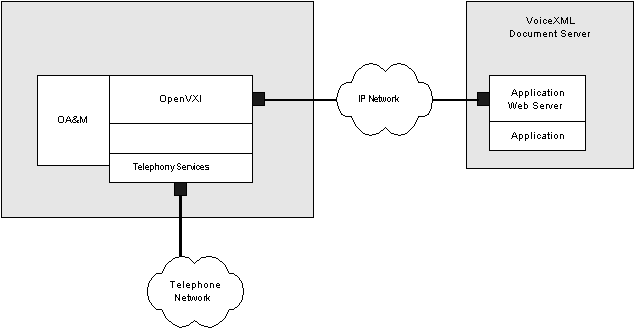
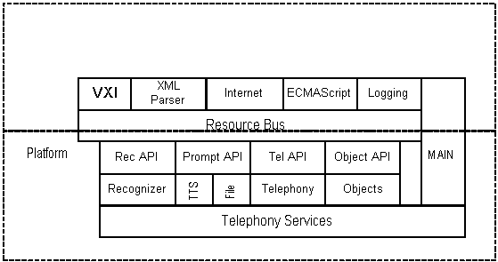

Vocalocity OpenVXI Architecture
Vocalocity OpenVXI is a portable open source based toolkit that interprets the
VoiceXML dialog markup language. It is designed to serve as a component for
system integrators and platform vendors who want to incorporate VoiceXML into
their products.
Introduction
A browser is a client application program that takes one or more input streams on a platform and executes an application that lives on one or more document servers by interpreting markup. In the case of VoiceXML, the application consists of the call flow logic, the prompts for the application, and any associated grammars (see figure below). The document server executes portions of the application dialog by delivering VoiceXML markup to the browser in response to a document request. The markup interpreter renders the VoiceXML markup within an interpreter context, perhaps changing the context, and then makes calls into the implementation platform. The implementation platform contains all of the resources needed by the markup interpreter to render the dialog.
Process Architecture
The figure below shows the components for a VoiceXML system. When a call is received it is detected by the implementation platform. The platform sends an event to the markup interpreter, which looks in its context for the URI of the initial document to fetch. The interpreter then sends a Request to the Document Server for the initial document. The Document Server then sends the document back to the Markup Interpreter which then instructs the Implementation Platform on the first steps to perform on behalf of the caller. The Markup Interpreter then interprets the result of an execution in the Implementation Platform. The interpretation may result in the Markup Interpreter making additional document requests to the Document Server.
System Architecture
The figure also shows the system architecture where OpenVXI is integrated onto a platform by adding speech engines, platform monitoring, administration, and telephony interfaces. This integrated platform receives VoiceXML pages from a document server. The document server consists of a web server, potentially an application framework, and a VoiceXML application. The VoiceXML application can be one or more VoiceXML files, or these files can be dynamically generated using CGI scripts or other computations.

The implementation platform executes the VoiceXML pages to provide the speech service to the caller connected over the telephone network. The implementation platform logically consists of four parts:
- OpenVXI: interprets the VoiceXML markup and calls into the platform services to render the markup.
- Platform services: provide the high-level services necessary for the system to run, including the recognition engine, prompt engine, Internet fetch library, and ECMAScript engine. OpenVXI accesses these components through interfaces that must be implemented in order for the system to function. These interfaces do not define the mechanism for communicating between the implementation of the interface and the underlying software: this could be done using client/server protocols or direct communication.
- Telephony and base services: base operating system services and telephony services needed to receive phone calls. OpenVXI makes few assumptions about the operating system and telephony services, as it accesses them through replaceable interfaces.
- Main process and operations, administration, and maintenance system: collection of tools responsible for system management and error reporting.
VoiceXML Implementation Platform Components

The figure above shows VoiceXML platform architecture and the component parts. All components are designed to be portable across operating systems. OpenVXI consists of:
-
VXI
Interprets all VoiceXML markup and acts as the main control loop. The VXI implements all required portions of the VoiceXML 2.0 specification and most optional features.
-
XML Parser Interface
Provides access to a XML DOM parser, currently implemented by directly calling the open source Apache Xerces SAX and DOM parser APIs.
-
Internet Interface
Provides access to application documents via http:// and file:// access, as well as support for POSTing data back to the application server. The reference implementation includes and implementation of this interface.
-
ECMAScript (JavaScript) Interface
Provides access to ECMAScript execution services. The reference implementation integrates the open source Mozilla SpiderMonkey engine.
-
Logging Interface
Used to report errors, events, and diagnostic messages to system operators. The reference implementation logs to a file and optionally to standard output.
The implementation platform must provide the following resource interfaces:
-
Recognizer Interface
Provides the grammar management and recognition services as required by the VoiceXML specification, including dynamic grammar construction and grammar enabling. It obtains caller input via the telephony services.
-
Prompt Interface
Provides complete prompting services, including the ability to play "filler" audio in order to support fetch audio. It must handle recorded audio (specified by URI) and provide text-to-speech services, passing the returned audio to the telephony services for playback.
-
Telephony Interface
Provides call control services, including the ability to transfer and disconnect calls as well as delivering telephony events.
-
Object Interface
Provides access to objects, platform defined extensions to the VoiceXML language that are accessed through the object element. Objects can easily be defined to meet platform specific requirements for extended call control, CTI screen pop, or other requirements.
Copyright (c) 2004-2005 Vocalocity, Inc. All rights reserved.
Vocalocity, the Vocalocity logo, and VocalOS are trademarks or registered
trademarks of Vocalocity, Inc.
OpenVXI is a trademark of Scansoft, Inc. and used under license by Vocalocity.